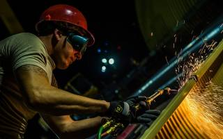
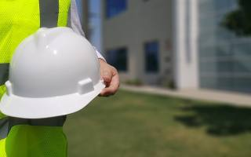

A. VOSYLIENĖS MOKYMO KONSULTACINĖ FIRMA
Mokymas pagal formaliąsias ir neformaliąsias mokymo programas, palankiausiomis sąlygomis!
Mokymas pagal formaliąsias ir neformaliąsias mokymo programas, palankiausiomis sąlygomis!
Jau 20 metų sėkmingai dirbanti A. Vosylienės mokymo konsultacinė firma yra viena didžiausių respublikoje, ruošianti įmonių darbuotojus pagal ŠMM išduotą licenciją, pagal 100 formaliųjų mokymo programų bei daugybę neformaliųjų mokymo programų. Mūsų firma gali išspręsti visus Jūsų įmonei iškilusius mokymo, atestavimo, konsultavimo, įmonės norminių aktų ruošimo, darbuotojų saugos ir sveikatos srityje klausimus.
Mūsų firma gali išspręsti visus Jūsų įmonei iškilusius mokymo, atestavimo, konsultavimo, įmonės norminių aktų ruošimo, darbuotojų saugos ir sveikatos srityje klausimus.
 Mokome: pakrovimo – iškrovimo darbų, suvirinimo, santechniko darbų, remonto, montavimo darbų, dujinių įrenginių, pavojingų medžiagų vamzdynų, katilų, kėlimo įrenginių, kompresorių, šaldymo įrengimų aptarnavimo, darbui su pavojingais kroviniais, atliekomis, cheminėmis medžiagomis, medienos apdirbimo darbų, darbų aukštyje, darbdavius, darbų saugos specialistus. Atliekame: visų energetikos sektorių – elektros, šilumos, dujų, naftos darbuotojų atestavimą, pagal Energetikos ministro nustatytą tvarką.
 VEI raštas 2R-263, 2014-02-20. 2014-02-20 Valstybinė energetikos inspekcija patvirtino A. Vosylienės mokymo konsultacinės firmos Sertifikavimo skyriaus organizuojamo energetikos sektoriaus energetikos objektus, įrenginius statančių ir eksploatuojančių darbuotojų sertifikavimo tvarkos aprašą kuri iš esmės atitinka Energetikos objektus, įrenginius statančių ir eksploatuojančių darbuotojų atestavimo tvarkos aprašo reikalavimus ir Lietuvos standarto LST EN ISO/IEC 17024:2012 “Atitikties įvertinimas. Bendrieji darbuotojų sertifikavimo įstaigoms keliami reikalavimai” 8 skyriuje nustatytus bendruosius reikalavimus sertifikavimo schemoms.
Jau 20 metų sėkmingai dirbanti A. Vosylienės mokymo konsultacinė firma yra viena didžiausių respublikoje, ruošianti įmonių darbuotojus pagal ŠMM išduotą licenciją, pagal 100 formaliųjų mokymo programų bei daugybę neformaliųjų mokymo programų. Mūsų firma gali išspręsti visus Jūsų įmonei iškilusius mokymo, atestavimo, konsultavimo, įmonės norminių aktų ruošimo, darbuotojų saugos ir sveikatos srityje klausimus.
A. Vosylienės mokymo konsultacinė firma
Įmonės kodas: 165829829
Adresas: Gedimino g. 1, Kazlų Rūda LT-69401
Filialas: R. Juknevičiaus 48 Marijampolė LT-68201
Mob. Tel. +370 687 56216
Tel./faks. +370 343 95451
el. paštas: info@mokymocentras.eu
kursai.vosyliene@gmail.com
vosyliene.kursai@gmail.com
Darbo valandos:
I – V 8 – 17val. (pietų pertrauka 12 – 13val)
VI – VII nedarbo dienos